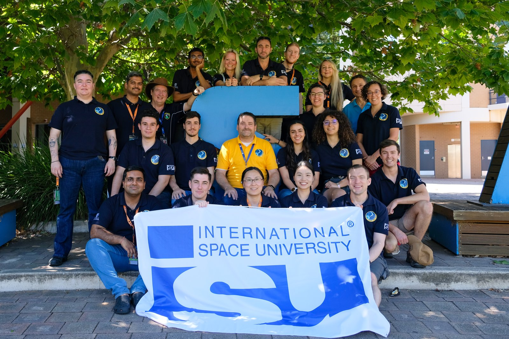
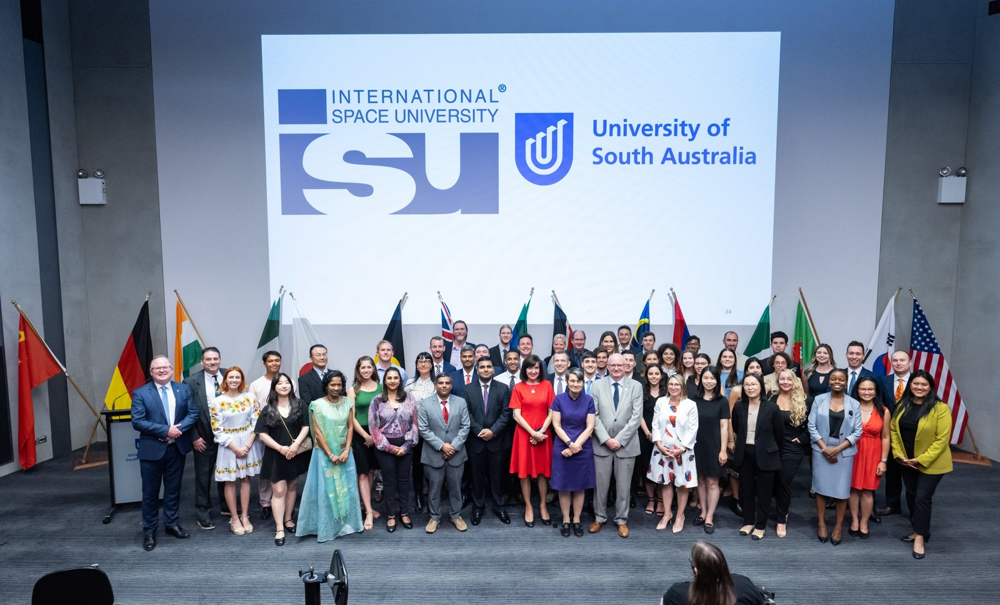

Team projectJourney to the Moon
The program's team project, on a sustainable human presence on the Moon.
Il team project del programma, sulla presenza umana sostenibile sulla Luna.
Back to ProjectsTorna a Progetti
Southern Hemisphere Space Studies Program 2023, Adelaide, January to February 2023
Southern Hemisphere Space Studies Program 2023, Adelaide, da gennaio a febbraio 2023
An intensive interdisciplinary course on the technical, legal, business and policy sides of the space sector, attended with a partial scholarship from ESA.
Un corso intensivo e interdisciplinare sugli aspetti tecnici, legali, economici e politici del settore spaziale, frequentato con una borsa di studio parziale dell'ESA.


Team projectThe program's team project, on a sustainable human presence on the Moon.
Il team project del programma, sulla presenza umana sostenibile sulla Luna.
A stratospheric balloon designed, launched and recovered in one week, run as a space mission analogue.
Un pallone stratosferico progettato, lanciato e recuperato in una settimana, gestito come analogo di una missione spaziale.